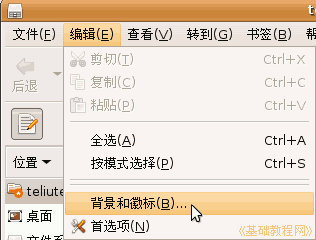
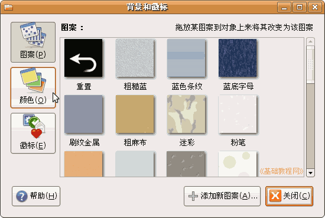
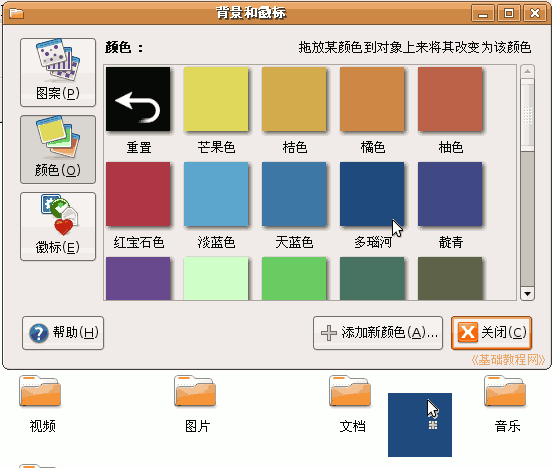
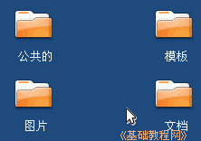
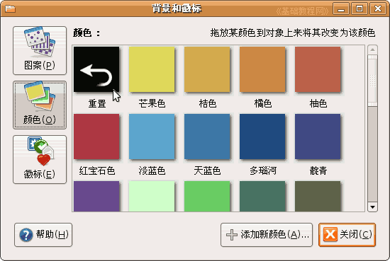

电脑操作基础
作者：TeliuTe 来源：基础教程网
二十八、文件夹背景 返回目录 下一课打开一个文件夹后，默认的背景是空白的，我们也可以换一个颜色或图案，下面我们来看一个练习；
1、文件夹
1）点菜单“位置－主文件夹”，打开主文件夹；
2）在出来的文件浏览器窗口中，点菜单“编辑－背景和徽标”，出来一个面板；

3）在出来的面板左边，点“颜色”按钮，设置背景色；

4）在出来的颜色面板里，选择中间的“多瑙河”蓝色，把它拖到主文件夹的空白处；

5）松开鼠标，主文件夹的背景色就变成了蓝色；

6）去掉背景色的方法是，在颜色面板的中，把第一个黑色箭头“重置”拖到文件夹里；
本节学习了在Ubuntu中设置文件夹的背景的基本操作，如果你成功地完成了练习，请继续学习下一课内容；
本教程由86团学校TeliuTe制作|著作权所有，商业用途请与作者联系
基础教程网：http://teliute.org/
美丽的校园……
转载和引用本站内容，请保留版权信息和本站链接。